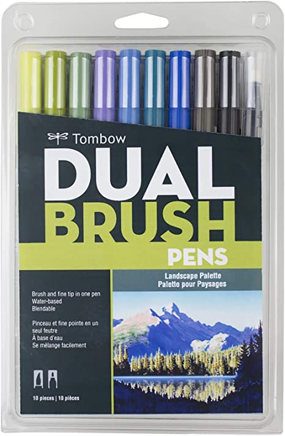
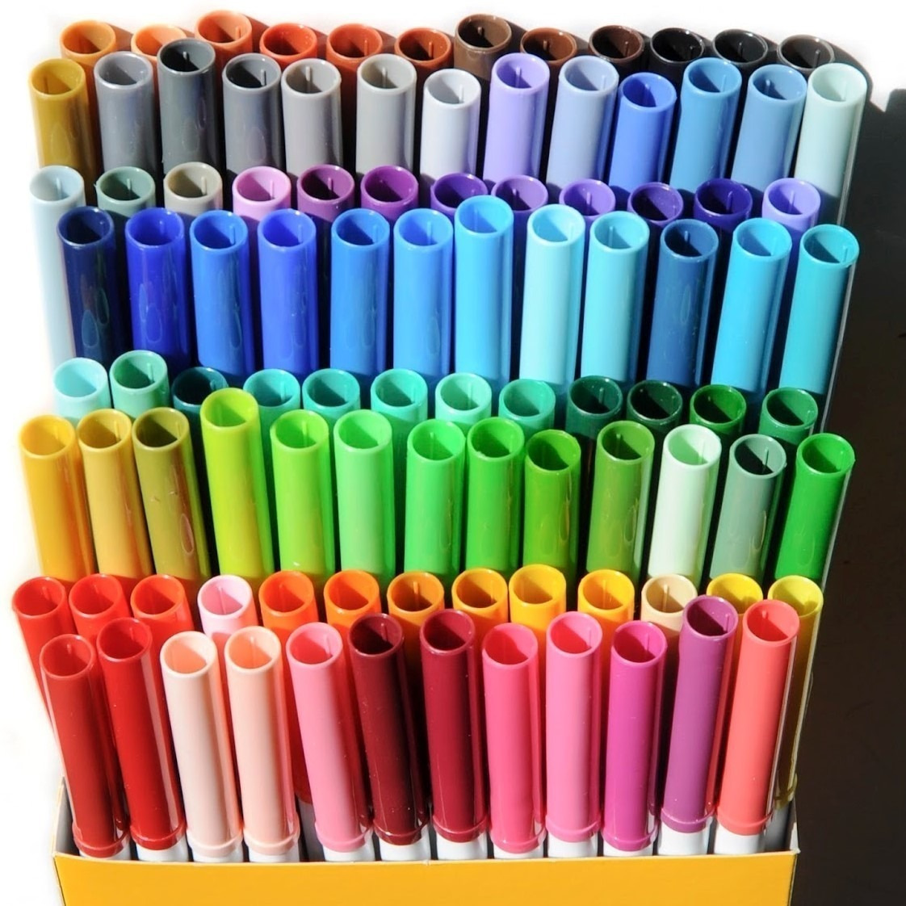
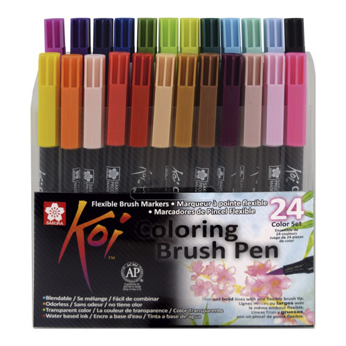
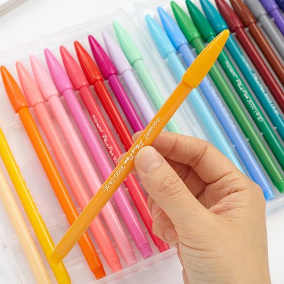
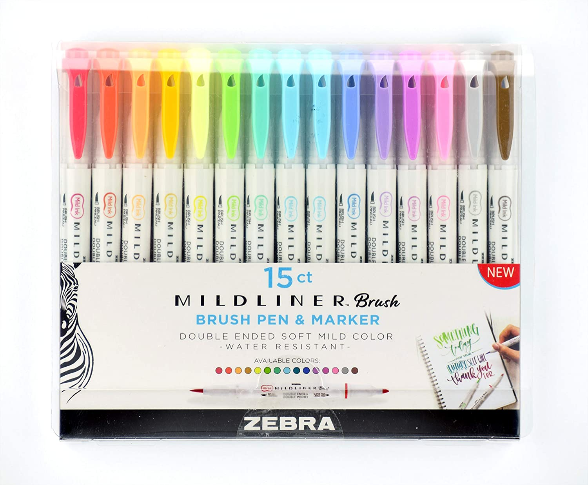

Les dejo algunos de mis materiales y donde los compré por si se les ha hecho difcil de conseguir o si les interesa comprarlos y no saben donde.
|  | Los Tombow los recomiendo mucho ya es de las mejores marcas en punta pincel, los compré en Amazon porque es muy confiable |
|
|  | Los Supertips los recomiendo porque tiene una gran variedad de colores, son muy económicos, yo los los compré en Costco, ya que respeta el precio de fábrica, y en algunos lugares les duplican el precio |
|
|  | Los Sakura koi los recomiendo tienen una punta pincel muy buena, son acuareleables, yo los compré en Amazon, es confiable, pero si te sirve una tienda física en Lumen los venden igual. |
|
|  | Los monami plus 3000 Yo los compre en Aliexpress por que el precio es más accesible, ya que en tiendas de instagram es mucho más caro el doble o el triple, lo malo es que tardan como 1 mes o 2 meses. |
|
|  | Los mildliner brush pen son muy buenos en su punta pincel, tiene colores opacos que son muy bonitos, lo único malo es que su precio es algo elevado, yo los compré en Amazon, ya que es una página confiable. |
|